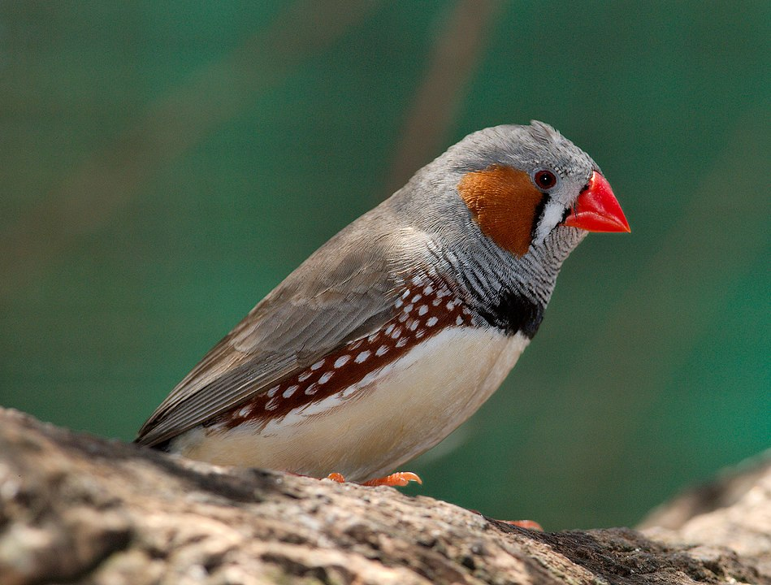
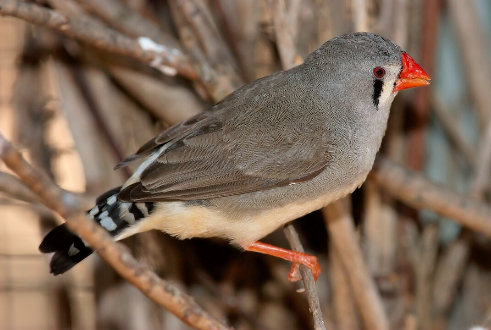

 A zebrapinty (Taeniopygia guttata) a madarak (Aves) osztályának verébalakúak (Passeriformes) rendjébe, ezen belül a díszpintyfélék (Estrildidae) családjába tartozó faj.
Megjelenése
Testhossza 10 centiméter, testtömege 8–9 gramm. A hím feje oldalt gesztenyebarna, fejének első része fehér, elől és hátul függőleges fekete vonal határolja. A torok és a begy ezüstszürke, fekete hullámokkal; a mellkas fekete. A tojó többnyire szürkésbarna, szeme alatt fekete függőleges csíkkal. A farok mindkét nemnél fekete-fehér sávos. A csőr rövid, kúp alakú, ideális a magevő madár számára, a hímeknél világító piros, a nőstényeké világosabb, narancssárga.
Életmódja
E madár társas lény, a szabadban kolóniákban és tartós párkapcsolatban él. Egymagában tartani állatkínzás, kalitkában maximum két madár tartható, a nem nem számít. Több pár együtt-tartásához röpde szükséges. Tápláléka fűmagok és néhány rovar, a zöldeleséget is szereti (pl. salátalevél). Az egészséges madár éberen figyeli környezetét, állandó mozgásban van: ugrál, tollászkodik, hangoskodik, fürdik és sokat eszik. Fogságban 10–12 évig is elélhet.
A zebrapinty tartása
Annak ellenére, hogy már 1817-ben leírták és nem sokkal utána már tartották is fogságban, a madár a 19. század során nem számított gyakori kalitkamadárnak. Közkedveltsége a 20. században indult meg és mára a leggyakrabban tartott díszpintyfajjá lett. Ausztrália 1960-ban betiltotta az országból a madárkivitelt, így azóta nem kerültek vadon befogott madarak a zebrapintyek közé.
A zebrapinty mára domesztikált állatnak tekinthető. A tenyésztés során létrejöttek a vadszínűtől eltérő színű formák is, ezek közül a fehér színű a leginkább elterjedt.
A díszállat-kereskedések a változatos formájú, anyagú, színű és méretű kalitkákat kínálnak. A választásnál figyelembe kell venni, hogy a zebrapinty nagy mozgásigényű, ezért egy párnak a minimálisan 50x40x30 cm-es kalitka javasolható. Ideális esetben a kalitka téglalap alakú, magassága kisebb legyen, mint a hossza.
Mivel a pintyek igen csak szemetelnek, ezért előnyös lehet az üvegbetétes kalitka. Praktikus továbbá, ha a kalitka alja tálcás, így könnyebben tisztítható. Hozzá kell tenni, hogy szinte már az összes mostanság kapható kalitka ilyen.
Az ajtónak akkorának kell lennie, hogy be tudjunk nyúlni, és könnyen meg tudjuk fogni szükség esetén a madarakat. Szükséges továbbá egy másik nyílás is, ahová a fürdetőt tudjuk felhelyezni, illetve egy harmadik, ahová a zebrapinty fészkét tudjuk illeszteni.
Ha mégsem kalitkába, hanem röpdében vagy madárszobában tartjuk a pintyeket, figyelni kell arra, hogy ne zsúfoljuk túl az állományt. Mivel a méret ezekben az esetekben engedi, faágakat is behelyezhetünk madaraink szórakoztatására. Kalitkában pedig ülőfával oldhatjuk meg, hogy legyen hova le-és felszállniuk, illetve csak pihenniük. A röpdében vagy a madárházban más, békés természetű madarakkal együtt is tarthatjuk a zebrapintyeket.
A lakásban, kalitkában tartott zebrapintyeket jó időben kihelyezhetjük a teraszra, vagy kitehetjük őket a kertbe, természetesen szélvédett, árnyékos, más háziállatok számára nem elérhető, biztonságos helyre.